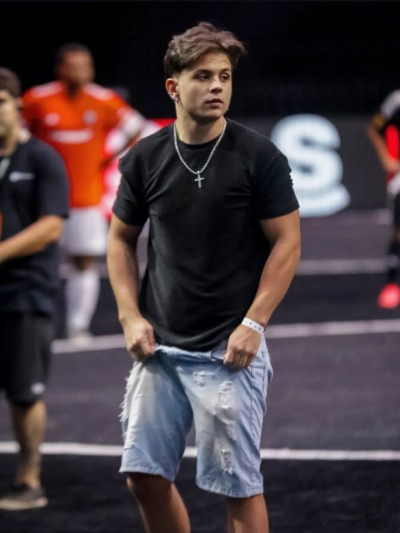

Paulinho o Loko, cujo nome verdadeiro é Aliffe Henrique de Carvalho, nasceu em Machado, Minas Gerais, em 21 de dezembro de 2001, e cresceu em uma cidade pequena do interior mineiro, onde desde cedo demonstrou curiosidade por tecnologia e jogos eletrônicos, especialmente títulos de mundo aberto como Grand Theft Auto V; sua infância simples e marcada pelo convívio familiar moldou uma personalidade autêntica e bem-humorada, que mais tarde se tornaria uma das principais características de seu conteúdo digital; ainda adolescente, começou a explorar o universo online criando vídeos de trotes e modificações de jogos, o que lhe deu notoriedade inicial e abriu caminho para sua carreira como youtuber e streamer; fora das câmeras, Paulinho mantém hábitos que revelam seu lado pessoal, como o gosto por música, tocar guitarra e viajar, além de valorizar suas raízes e a vida tranquila que sempre o acompanhou, mostrando que, apesar do sucesso e da fama conquistados, continua conectado às suas origens e à simplicidade que o define; essa combinação de talento, autenticidade e ligação com sua história pessoal explica em grande parte o carisma que atrai milhões de seguidores e sustenta sua trajetória como um dos maiores criadores de conteúdo do Brasil.
A carreira de Paulinho o Loko, cujo nome verdadeiro é Aliffe Henrique de Carvalho, começou em 2015 com o canal “Modder” no YouTube, onde publicava vídeos de Grand Theft Auto V e trotes telefônicos que rapidamente chamaram atenção pela criatividade e humor; em 2018, decidiu mostrar o rosto pela primeira vez em um vídeo indo ao shopping, aproximando-se ainda mais de seus seguidores e marcando uma nova fase em sua trajetória; o grande salto veio em 2020, quando passou a produzir conteúdo de GTA RP, criando personagens e narrativas que conquistaram milhões de visualizações e se tornaram sua marca registrada; em 2021, migrou para a Twitch, onde acumulou milhões de seguidores e se consolidou como um dos streamers mais assistidos do Brasil e do mundo, chegando a figurar entre os cinco mais assistidos globalmente em 2023; em setembro de 2022, integrou a equipe de eSports Fluxo, mas anunciou sua saída em janeiro de 2024 para seguir carreira independente; atualmente, seu canal no YouTube ultrapassa 7,5 milhões de inscritos e mais de 2,5 bilhões de visualizações, com vídeos que frequentemente superam 1 milhão de views, enquanto na Twitch mantém transmissões diárias que misturam ação, improviso e humor; essa trajetória, marcada por inovação, autenticidade e proximidade com o público, transformou Paulinho em um dos maiores nomes do entretenimento digital brasileiro e referência internacional no universo dos streamers.
O reconhecimento e os prêmios conquistados por Paulinho o Loko refletem a dimensão de sua influência no cenário digital e de eSports, consolidando-o como um dos maiores nomes do entretenimento brasileiro; em janeiro de 2023, ele alcançou destaque internacional ao figurar entre os cinco streamers mais assistidos do mundo, um feito que colocou o Brasil em evidência no cenário global de transmissões ao vivo; em 2024, venceu o Prêmio eSports Brasil na categoria de Melhor Streamer, repetindo o feito em 2025 e mostrando consistência em sua relevância e qualidade de conteúdo; além disso, em 2025 também foi premiado como Melhor Creator Long Form, reconhecimento voltado para criadores que se destacam em produções mais longas e elaboradas; essas conquistas não apenas validam sua popularidade, mas também demonstram o impacto cultural de seu trabalho, que mistura humor, improviso e narrativas criativas dentro do universo de GTA RP; ao longo dos anos, Paulinho acumulou milhões de seguidores no YouTube e na Twitch, mas os prêmios oficiais reforçam que sua trajetória vai além de números, sendo marcada por inovação, autenticidade e pela capacidade de transformar transmissões em experiências únicas que conquistam tanto o público quanto a crítica especializada.